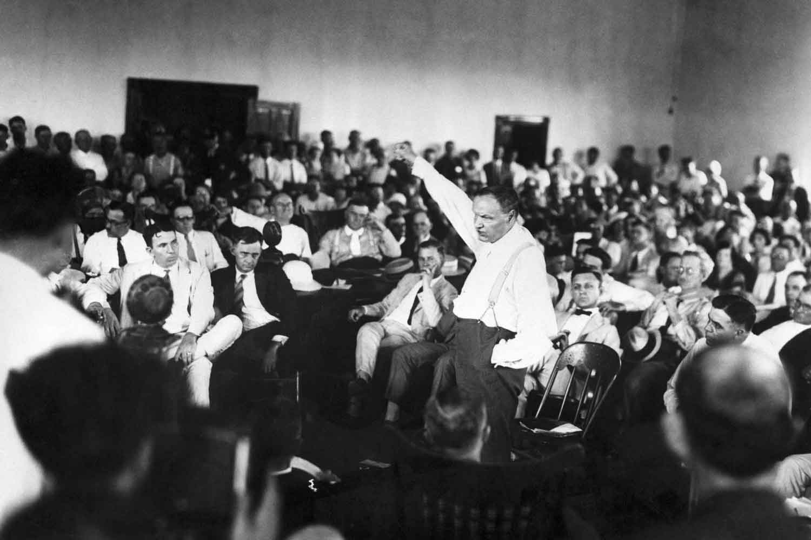
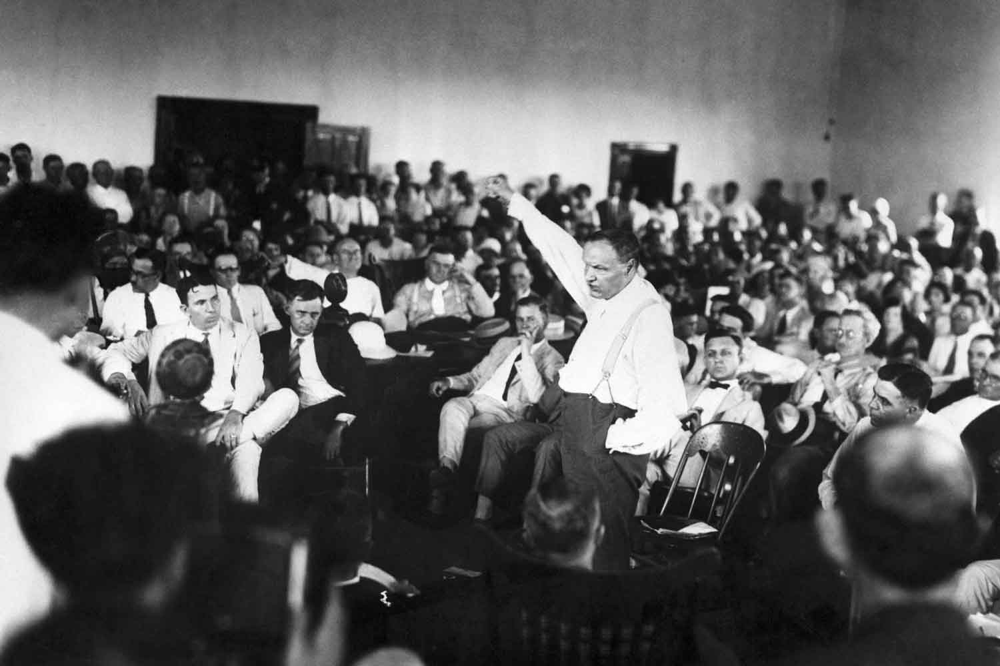

175 Years of Discovery
In 1845 Scientific American began in “a little ‘7 by 9’ office” that founder Rufus Porter rented on 11 Spruce Street, in Manhattan, New York. And 175 years later we’re still trying to bring to you, dear reader, the most arresting stories in science.
Along the way we’ve covered many, if not most, of the significant technical and scientific developments of the day. Several of those markers can be recognized as milestones only in hindsight: the theories of Darwin and Einstein, for instance, took many decades to become the new bedrock of science.
We tried to pick some highlights from about a quarter of a million pages, so this timeline is anything but comprehensive. When you scroll through these images, some have additional material attached to them because the original story had many chapters yet to be written. Here’s hoping we’ll be bringing them to you for at least the next 175 years.
SubscribeA story lauds the Morse code and the telegraph, humanity’s first communication system powered by electricity. In 1887, Alexander Graham Bell would revisit the theme with an article on the telephone.
An article on the prolific inventor highlights his “phonograph”—the forerunner of every device for playing music. Sound was recorded on a wax cylinder.
Her pioneering work on radiation, which provided an early glimpse into the atomic nucleus, is lauded in a writeup on the “Twice Recipient of the Nobel Prize.” We also carried eight of her articles between 1902 and 1911.
Since the invention of flight in 1783 by the Montgolfier brothers in France, flying machines have become essential. This article celebrates a new regular passenger air service across the Atlantic Ocean.
The mosquito-killing chemical was an early entry in the catalogue of human changes in the environment that were far more serious than anyone realized.
World-renowned for his theories of relativity, Einstein in his later years tried to find a theory that could combine gravity and electromagnetism, and wrote an article for us in 1950 on his progress to date.
The article by this nuclear physicist contained so many details (which were all public anyway) on the hydrogen bomb that it was censored by the Atomic Energy Commission. It was the first of numerous articles on nuclear weapons and nuclear warfare.
The inventor describes the first vaccine that could prevent this devastating childhood disease. In 1881, Louis Pasteur had inaugurated Scientific American’s coverage of vaccines with an article on the rabies vaccine.
 

A famous chapter in the fight over evolution, written by an anthropologist who was called as an expert witness at the “monkey trial” of John T. Scopes in 1925.
An astonishingly prescient but little-known scientist discusses data suggesting that human industry and agriculture are changing the earth’s climate.
One of the founders of quantum mechanics discusses the future of physics. The discoverer of “quanta,” Max Planck, also described his work for Scientific American, in 1910.
The scientist with a knack for making the difficult exciting discusses how humanity is looking for other civilizations in the galaxy.
The physicist lays out his theory of what came to be known as Hawking radiation, a phenomenon that still bedevils theoretical physicists.
The Nobel–Prize winning scientist and her colleague describe the protein that guides cells to form the brain and nervous system.
These famous paleontologists describe footprints left in Volcanic ash in Tanzania by three of our possible forebears 3.6 milion years ago.
The human immunodeficiency virus is thought now to have jumped the species barrier and spread widely during the 1980s, killing millions of people worldwide.
The science of evolution has been evolving since its discovery by Charles Darwin (who wrote for Scientific American in 1877.) In this article, Gould talks about sudden shifts in the process of speciation called “puncuated equilibrium.”
Scientists set thresholds for key environmental processes that, if crossed, could threaten earth’s habitability. By 2010 three had already been exceeded.”
The inventor of the World Wide Web calls presciently for protecting the Web from commercial predation and from political interference.

The growth of inequality and the influence of money in politics in America means the fading of opportunity for most of its citizens.”
The growth of the Internet has made it “easier for agents of disinformation to weaponize regular users of the social web to spread harmful messages.”